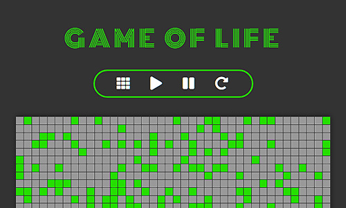

Songify
Songify
React
React Router
Redux
Node
Express
MongoDB
SASS
This music service relies on Node and MongoDB to supply React with fresh tunes. Redux manages a continually changing state as the user navigates and plays music. Search for songs, albums and artists and build custom playlists. Styled with SASS, this full stack application is hosted on Heroku and features music from the Free Music Archive.
Game of Life
Game of Life
React
SASS
Play John Conway's Game of Life with this easy-to-use React application. Styled with SASS and laid out with flexbox, the combination of buttons and sliders make for an intuitive user interface. Change grid resolution with a simple slide while the game board dimensions remain static.
Twitch Streamer Status
React
API
SASS
Keep track of your favorite twitch streamers with this React SPA. An API fetch retrieves streamer information, including their current status. Add and remove streamers from the list, and sort by status.
Twitch Streamer Status
React Weather Station
React Weather Station
React
API
SASS
This React application uses browser geolocation data to fetch local weather information from an API. Styled with SASS, the app displays current weather conditions and a 5 day forecast. The user can also search for conditions using a city name or zip code.